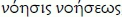

B. The object
§194
The object is immediate being by virtue of the indifference towards the difference that has sublated itself in it. It is in itself the totality and, at the same time, since this identity is the identity of the moments but an identity that only is in itself [ansichseiende], it is just as indifferent to its immediate unity. It breaks down into differentiated [moments], each of which is itself the totality. The object is thus the absolute contradiction of the complete self-sufficiency of the manifold and the equally complete lack of self-sufficiency of the differentiated [moments].
Addition 1. Construing the absolute (God) as the object and not moving beyond such a construal is in general the standpoint of superstition and slavish fear, as Fichte above all has rightly emphasized in recent times. To be sure, God is the object, and indeed the object without qualification, opposite which our particular (subjective) opinions and wants have no truth and no validity. But precisely as the absolute object, God does not stand like some sinister and inimical power over against subjectivity. Instead God contains subjectivity as an essential factor within himself. This point is formulated in the teachings of the Christian religion, when it is said that God wants for all human beings to be helped and wants all of them to be blessed. That human beings are helped, that they are blessed, this happens by virtue of the fact that they attain consciousness of their unity with God and God ceases to be for them a mere object and thereby just an object [Gegenstand] of fear and terror, as was the case for the religious consciousness of the Romans in particular. If, furthermore, in the Christian religion, God is known [gewußt] as love, and indeed insofar as he revealed himself to humanity in his Son, who is one with him, and did so as this individual human being, by this means redeeming humanity, this says likewise that the opposition of objectivity and subjectivity is in itself overcome and the basic matter for us is to participate in this redemption by letting go of our immediate subjectivity (taking off the old Adam) and becoming conscious of God as our true and essential self. – Now, just as religion and the religious culture consists in overcoming the opposition of subjectivity and objectivity, so too science, and more precisely philosophy, has no other task than to overcome this opposition through thinking. In the case of knowing, what generally needs to be done is to strip away the alienness of the objective world standing over against us, to find our way into it, as one says, which amounts to saying that we need to trace the objective [dimension] back to the concept which is our innermost self. From the previous discussion it can be gathered how wrong it is to consider subjectivity and objectivity a rigid and abstract opposition. Both are utterly dialectical. In keeping with its own activity, without needing any external material or stuff, the concept which at first is only subjective proceeds to objectify itself, and so too the object is not something immovable and devoid of process, but instead is the process of proving itself to be at the same time the subjective [dimension] that forms the progression to the idea. What happens to anyone who is not familiar with the determinations of subjectivity and objectivity, preferring to hold fast to them in their abstraction, is that these abstract determinations slip through his fingers before he lays hold on them and he says precisely the opposite of what he wanted to say.
Addition 2. Objectivity contains the three forms: mechanism, chemism, and the relation of purpose. The mechanically determined object is the immediate, indifferent object. It contains difference, to be sure, but the diverse [elements] behave indifferently towards one another and the combination of them is only external to them. In chemism, by contrast, the object demonstrates itself to be essentially different, such that the objects are what they are only through their relation to one another and the difference constitutes their quality. The third form of objectivity, the teleological relationship, is the unity of mechanism and chemism. The purpose is again, like the mechanical object, a totality enclosed within itself, yet enriched by the principle of difference [Differenz] that emerged in chemism, and so it [the purpose] refers to the object standing over against it. It is the realization of the purpose, then, that forms the transition to the idea.
a. Mechanism
§195
The object, taken first in its immediacy, is (1) the concept only in itself; it has the concept at first as something subjective outside it, and every determinacy is posited as an external determinacy. As the unity of differences, it is thus something composite, an aggregate, and the effect on another remains an external relation: formal mechanism. – In this relation and lack of self-sufficiency, the objects remain equally self-sufficient, resistant, external to one another.
Addition. Mechanism, as the first form of objectivity, is also that very category that first presents itself to reflection in observation of the objective [gegenständlich] world and a category from which this observation quite frequently does not budge. Nevertheless, this is a superficial manner of observation, lacking in thought, insufficient for making do either in relation to nature or even less in relation to the spiritual world. In nature only the completely abstract relationships of matter (insofar as it remains locked up in itself) are subject to mechanism. By contrast, even the phenomena and processes of the so-called 'physical domain' in the narrower sense of the word (for example, the phenomena of light, heat, magnetism, electricity, and so forth) cannot be explained in a merely mechanical manner (i.e. through pressure, impulse, displacement of parts, etc.). Even more unsatisfactory is the application and transference of this category to the domain of organic nature, insofar as it is a matter of conceiving what is specific to it: for example, the nourishment and growth of plants or even animal sensation. In any case it must be regarded as a quite essential deficiency, indeed, the chief deficiency of modern research into nature that, even where it is a matter of completely different and higher categories than those of mere mechanism, it nevertheless stubbornly clings to the latter, contradicting what presents itself to an unprejudiced observation [Anschauung], and by this means blocks the path to an adequate knowledge of nature. – Next, with regard to the formations of the spiritual world, here too in the consideration of them the mechanical perspective has been unduly promoted in various ways. This is the case, for example, if it is said that a human being consists of body and soul. In this assertion these two count as subsisting each for themselves and as being combined with one another only externally. It also happens when the soul is regarded as a mere complex of forces and faculties, subsisting self-sufficiently next to one another. – Thus, on the one hand, the mechanical manner of observation must be rejected out of hand where it comes on the scene with the pretension of occupying the position of conceptual knowing in general and making mechanism the absolute category. Yet, on the other hand, mechanism's legitimacy and meaning as a universal, logical category must also be expressly vindicated, and accordingly by no means should it be limited merely to the domain of nature from which this category's name is taken. Thus, there is nothing to object to if attention is paid to mechanical actions (e.g. those of weight, lever, and so forth) even outside the realm of genuine mechanics, particularly in physics and in physiology. Only it should not be overlooked thereby that within these domains the laws of mechanism are no longer the decisive ones, but make their appearance only, as it were, in a subservient position. Immediately linked to this point is then the further remark that where the higher functions in nature, namely, the organic functions, suffer a disturbance or hindrance in one way or another in their normal effectiveness, the otherwise subordinate mechanism immediately emerges as dominating. Thus, for example, someone suffering from a weak stomach has a sensation of pressure in the stomach after consuming a modest quantity of certain foods, while others whose digestive organs are healthy remain free of this sensation, despite having consumed the same thing. This is also the case with the general feeling of heaviness in the arms and legs when the body is in a sickly mood. – Even in the domain of the spiritual world, mechanism has its place, albeit a place that is likewise merely subordinate. One speaks rightly of mechanical memory and of all sorts of mechanical activities such as, for example, reading, writing, playing music, and so forth. More precisely in this connection, as far as memory is concerned, a mechanical manner of behaving is even inherent in its essence; a circumstance that has often been overlooked by modern pedagogy, to the great detriment of the education of youth, in a mistaken zeal for freedom of the intelligence. Nevertheless, someone would prove to be a bad psychologist if, in order to fathom the nature of memory, he were to take flight to mechanics and apply its laws without further ado to the soul. The mechanical dimension of memory precisely consists solely in the fact that here certain signs, sounds, and so forth are construed in their merely external combination and then reproduced in this combination, without it being necessary thereby to attend explicitly to their meaning and inner combination. In order to recognize this connection with mechanical memory, no further study of mechanics is needed, and from this study there is nothing to be gained for psychology as such.
§196
Only insofar as the object is self-sufficient (see the preceding section) does it have the lack of self-sufficiency in terms of which it suffers violence. Insofar as the object is the posited concept in itself, neither of these determinations sublates itself in its other determination; instead the object joins itself together with itself through the negation of itself, through its lack of self-sufficiency, and only then is it self-sufficient. Thus, at the same time, in the difference from externality, and in its self-sufficiency negating this externality, it [the object] is the negative unity with itself, centrality, subjectivity – in which it is itself directed and related to the external. The latter is equally centred in itself and, in that, just as much related to the other centre, having its centrality just as much in the other. [Hence, the object in the second place is] (2) a differentiated [differenter] mechanism (fall, desire, social drive, and the like).
§197
The development of this relationship forms the syllogistic inference that the immanent negativity as the central individuality of an object (the abstract centre) relates itself to objects lacking self-sufficiency as the other extreme, relating to them through a middle [term] that unifies the objects' centrality and lack of self-sufficiency, the relative centre. [Hence, the object is] (3) absolute mechanism.
§198
The syllogism that has been given here (I – P – U) is a triad of syllogistic inferences. The flawed individuality of the objects lacking self-sufficiency, in which the formal mechanism is at home, is, in keeping with its lack of self-sufficiency, just as much the external universality. These objects are thus the middle also between the absolute and the relative centre (the form of the syllogism: U – I – P). For it is by means of this lack of self-sufficiency that those two are separated and are extremes just as they are related to one another. So, too, the absolute centrality as the substantial universal (the gravity that remains identical), which as the pure negativity also encapsulates in itself the individuality, is the mediating factor between the relative centre and the objects lacking self-sufficiency; ([thus amounting to] the form of the inference P – U – I) and, to be sure, just as essential in terms of the immanent individuality where it functions to separate, as it is in terms of the universality as the identical cohesion and as the undisturbed being-in-itself.
§199
The immediacy of concrete existence that objects have in absolute mechanism is in itself negated by the fact that their self-sufficiency is mediated by their relations to one another, hence, through their lack of self-sufficiency. Thus, the object must be posited as differentiated [different], in its concrete existence, opposite its other.
b. Chemism
§200
The differentiated [differente] object has an immanent determinacy constituting its nature and in that determinacy it has concrete existence. But as the posited totality of the concept, it is the contradiction of this its totality and the determinacy of its concrete existence [Existenz]; it is thus the [process of] striving to sublate this contradiction and make its existence [Dasein] equal to the concept.
Addition. Chemism is a category of objectivity that as a rule does not tend to be stressed particularly. Instead it is usually taken together with mechanism as one and, in this manner of taking them together, under the common title 'mechanistic relationship', it is opposed to the relationship of purposiveness. The motivation for this is to be sought in the fact that mechanism and chemism have, indeed, this in common: each is initially the concretely existing concept only in itself, whereas the purpose, by contrast, is to be regarded as the concept existing concretely for itself. Nonetheless, mechanism and chemism also differ from one another very specifically, namely, in the way that the object, in the form of mechanism, is initially only an indifferent relation to itself, whereas the chemical object, by contrast, demonstrates itself to be related straightaway to an other. Now, to be sure, even in the case of mechanism, as it develops, relations to an other are already emerging. But the relation of the mechanical objects to one another is only an external relation initially, such that the objects related to one another are left with the semblance [Schein] of self-sufficiency. Thus, for example, in nature the various heavenly bodies that form the solar system are connected by their movements and, by this means, demonstrate that they are related to one another. Yet motion, as the unity of space and time, is nothing but an utterly external and abstract relation and so it seems as though the heavenly bodies, related in such an external manner to one another, would be and even remain what they are without this relation that they have to one another. – In the case of chemism, by contrast, things behave otherwise. Chemically differentiated [chemisch-differenten] objects are explicitly what they are, only through their difference [Differenz], and are thus the absolute drive to integrate themselves through and with one another.
§201
The chemical process thus has as its product the neutral dimension of these strung-out extremes, a neutral dimension which these extremes are in themselves; by means of the differentiation of the objects (the particularization), the concept, i.e. the concrete universal, joins itself [schließt sich…zusammen] with the individuality, i.e. the product, and so merely with itself. Equally contained in this process are the other syllogisms; the individuality, as activity, is likewise the mediating factor just like the concrete universal, the essence of the strung-out extremes, which enters into existence [Dasein] in the product.
§202
Chemism, as the reflexive relationship [Reflexionsverhältnis] of objectivity, still presupposes, together with the differentiated [different] nature of the objects, the immediate self-sufficiency of those same objects. The process is that of passing back and forth from one form into the other, forms that at the same time still remain external. – In the neutral product, the determinate properties that the extremes had opposite one another are sublated. This is, indeed, in keeping with the concept; but the animating principle of differentiating does not exist concretely in it since it has sunk back into immediacy. For this reason, the neutral dimension is a separable dimension. Yet the judging principle that severs the neutral dimension into differentiated [differente] extremes and gives the undifferentiated [indifferent] objects in general their difference [Differenz] and animation opposite an other falls outside that first process, and so does the process as the separation that strings things out.
Addition. The chemical process is still a finite, conditioned process. The concept as such is as yet only the inner dimension of this process and does not yet come into concrete existence in its being-for-itself. In the neutral product, the process is extinguished and what stirs things up falls outside the process.
§203
The externality of these two processes, the reduction of what are differentiated [Differenten] to something neutral and the differentiation of the undifferentiated [Differenzierung des Indifferenten] or neutral, which allows them to appear as self-sufficient opposite one another, shows its finitude in passing over into products in which they are sublated. Conversely, the process presents the presupposed immediacy of the differentiated [differenten] objects as a vacuous immediacy. – By means of this negation of externality and immediacy, into which the concept as object was immersed, it is posited freely and for itself opposite that externality and immediacy – as purpose.
Addition. The transition from chemism to the teleological relationship is entailed by the fact that the two forms of the chemical process reciprocally sublate one another. In this way it comes about that the concept, initially only present in itself in chemism and in mechanism, becomes free, and the concept, thus existing concretely for itself, is the purpose.
c. Teleology
§204
Purpose is the concept that is for itself and that has entered into a free concrete existence [Existenz] via the negation of immediate objectivity. It is determined as something subjective, in that this negation initially is abstract and thus objectivity also only stands over against it [i.e. the purpose] at first. In contrast to the totality of the concept, however, this determinacy of the subjectivity is one-sided and, indeed, for it [the purpose] itself, since all determinacy has posited itself as sublated in it. Thus, too, for it [the purpose] the presupposed object is only an ideal, in itself vacuous reality. As this contradiction of its identity with itself opposite the negation and the opposition posited in it, it is itself the sublating, the activity of so negating the opposition that it posits it as identical with itself. This is the process of realizing the purpose in which, by rendering itself something other than its subjectivity and objectifying itself, it has sublated the difference of both, has joined itself together only with itself and has preserved itself.
§205
The teleological relation in its immediacy is initially the external purposiveness, and the concept is opposite the object which is something presupposed. The purpose is thus finite, partly in terms of the content, partly in terms of the fact that it has an external condition in an extant object as the material of its realization. To this extent, its self-determination is merely formal. The immediacy entails, more precisely, that the particularity (as a determination of form, the subjectivity of the purpose) appears as reflected in itself, the content as distinct from the totality of the form, the subjectivity in itself, the concept. This diversity constitutes the finitude of the purpose within itself. The content is, by this means, as limited, contingent, and given as the object is something particular and extant.
Addition. When speaking of purpose, one usually has one's eye only on external purposiveness. In this manner of considering things, they do not count as bearing their determination in themselves. Instead they count merely as means that are used and used up to realize some purpose lying outside them. This is in general the viewpoint of utility, which formerly played a great role in the sciences as well, but then deservedly came to be discredited, and recognized to be insufficient for true insight into the nature of things. To be sure, justice must be done to finite things as such inasmuch as they are to be considered to be other than ultimate and to point beyond themselves. This negativity of finite things, however, is their own dialectic and, in order to know this, one first has to get involved with their positive content. Moreover, what is at stake in the case of the teleological manner of consideration is the well-intended interest of pointing out the wisdom of God announcing itself in nature. To this extent, accordingly, it should be noted that, with this search for purposes that things serve as means, one does not get beyond the finite and easily lapses into meagre reflections, as, for example, when not only is the grapevine considered from the viewpoint of the familiar use that it affords human beings, but even the cork tree is so considered in relation to the stopper that is cut from its bark in order to seal the wine bottle. In former times, entire books have been written in this vein and it is easy to establish that neither the true interest of religion nor that of science can be advanced in this way. The external purposiveness stands immediately before the idea, but sometimes what thus stands on the threshold is precisely more insufficient than anything else.
§206
The teleological relation is the syllogism in which the subjective purpose joins itself together [sich…zusammenschließt] with the objectivity external to it through a middle term [Mitte] that is the unity of the two, both as the purposive activity and as the objectivity immediately posited under the purpose, the means [Mittel].
Addition. The development of the purpose into the idea comes about by way of three steps: first, that of the subjective purpose; second, that of the purpose bringing itself about [sich vollführenden]; and third, that of the purpose that has brought itself about. – At the outset we have the subjective purpose and this, as the concept being for itself, is itself the totality of the conceptual moments. The first of these moments is that of the universality identical with itself: as it were, the neutral first water in which everything is contained but not yet separated out. The second is then the particularization of this universal, through which it receives a determinate content. But since this determinate content is posited by the activity of the universal, the latter then returns to itself by means of that content and joins itself together with itself [schließt sich mit sich selbst zusammen]. Accordingly, when we set a purpose in front of us, we also say that we decide [beschließen] on something and accordingly consider ourselves at the outset to be, as it were, open and amenable to this or that determination. Similarly then, however, it is also said that 'one has resolved [entschlossen] to do something', which expresses that the subject has emerged from his inwardness, i.e. his being only for himself, and let himself in for the objectivity standing opposite him. This then yields the progression from the merely subjective purpose to the purposive activity directed outwards.
§207
1. The subjective purpose is the syllogism in which the universal concept joins together with individuality by means of particularity, such that this [individuality] as the self-determination judges. That is to say, this individuality both particularizes that still indeterminate universal, making it a determinate content, and also posits the opposition of subjectivity and objectivity. It [this individuality] is, in itself, at the same time the return into itself since it determines the concept's subjectivity (presupposed as something opposite the objectivity) to be deficient in relation to the totality that has joined together with itself and since at the same time it thereby turns outward.
§208
2. This activity turned outward is the individuality that, in the subjective purpose, is identical to the particularity in which, next to the content, the external objectivity is also included. As such, this activity relates at the outset immediately to the object and takes control of it as a means. The concept is this immediate power because it is the negativity identical with itself, in which the being of the object is thoroughly determined only as something ideal [ideelles]. – The entire middle term is now this inner power of the concept as activity, with which the object is immediately unified as means and under which it stands.
Addition. The process of carrying out the purpose is the mediated manner of realizing the purpose; just as necessary, however, is the immediate realization of it. The purpose seizes the object immediately because it is the power over the object, because in it the particularity is contained and, in the latter, the objectivity is also contained. – The living entity has a body; the soul takes control of it and has immediately objectified itself in it. The human soul has a great deal to do in making its corporeal condition a means. A human being must first take possession of his body, as it were, so that it may be the instrument of his soul.
§209
3. The purposive activity with its means is still directed outward, since the purpose is also not identical with the object; thus it must first be mediated with the object. The means, as the object in this second premise, is in immediate relation with the other extreme of the syllogism, the objectivity as presupposed, the material. This relation is the sphere of the mechanism and chemism now serving the purpose that is their truth and free concept. That the subjective purpose, as the power of these processes in which the objective dimension rubs up against itself and sublates itself, keeps itself outside them and is what preserves itself in them – this is the cunning of reason.
Addition. Reason is as cunning as it is powerful. The cunning consists generally in the activity of mediating, which, by letting the objects, in keeping with their own nature, act on one another and wear themselves out on one another, without meddling immediately in this process, achieves its purpose alone. In this sense, one can say that the divine providence, over against the world and its process, behaves as the absolute cunning. God gives free rein to human beings with their particular passions and interests and, by this means, what comes about is the accomplishment of his aims which are different from what was pursued by those of whom he makes use in the process.
§210
Thus, the realized purpose is the posited unity of the subjective and the objective dimensions. This unity, however, is essentially determined in such a way that the subjective and objective dimensions are neutralized and sublated only with respect to their one-sidedness, while the objective dimension is subjected and made to conform to the purpose as the free concept and, thereby, to the power over it. The purpose preserves itself against and in the objective dimension because, in addition to being the one-sided subjective dimension (the particular), it is also the concrete universal, the identity of both, that is in itself [die an sich seiende Identität beider]. This universal, that as simple is reflected in itself, is the content that remains the same through all three termini [terms] of the syllogism and their movement.
§211
In the finite purposiveness, however, the purpose carried out is also something as internally broken as was the middle term and the initial purpose. What has come about is thus only a form posited externally in the material found before it, a form that, on account of the restricted content of the purpose, is likewise a contingent determination. The purpose attained is thus only an object that is also in turn a means or material for other purposes and so on ad infinitum.
§212
What happens, however, in the process of realizing the purpose in itself is that the one-sided subjectivity and the semblance [Schein] of objective self-sufficiency on hand opposite it are sublated. In seizing the means, the concept posits itself as the object's essence as it is in itself; in the mechanical and chemical process, the self-sufficiency of the object has already evaporated in itself and in the course it takes under the dominance of the purpose, the semblance of that self-sufficiency, the negative dimension opposite the concept, sublates itself. Yet this object is immediately already posited as vacuous in itself, as only ideal by virtue of the fact that the executed purpose is determined only as means and material. With this, the opposition of content and form has vanished as well. Since the purpose, by sublating [durch Aufhebung] the formal determinations, joins itself together with itself, the form is posited as identical with itself, thus as content, so that the concept as the activity of the form has only itself as content. It is thus posited through this process generally what the concept of the purpose was: the unity, being in itself, of the subjective and the objective dimensions now posited as being for itself – the idea.
Addition. The finitude of the purpose consists in the fact that, in the course of its realization, the material applied as means to it is only subsumed under it externally and made to conform to it. But, now, in fact the object in itself is the concept and because the concept, as purpose, is realized therein, this is only the manifestation of its own inner dimension. The objectivity is thus as it were only a hull under which the concept lies hidden. Within the finite, we cannot experience it or see that the purpose is truly attained. To accomplish the infinite purpose is thus merely to sublate the illusion [Täuschung] that it is not yet accomplished. The good, the absolute good, brings itself to completion in the world eternally and the result is that it is already brought to completion in and for itself, without needing first to wait for us. It is this illusion in which we live and at the same time it alone is the activating principle upon which the interest of the world rests. The idea in its process fabricates that illusion for itself, positing an other opposite itself, and its action consists in sublating this illusion. Truth emerges only from this error and herein lies the reconciliation with error and with finitude. Otherness or error, as something sublated, is itself a necessary moment of the truth, the truth which only is by making itself its own result.
C. The idea
§213
The idea is the true in and for itself, the absolute unity of the concept and objectivity. Its ideal content is none other than the concept in its determinations. Its real [reeller] content is only its exhibition [Darstellung], an exhibition that it provides for itself in the form of external existence [Dasein] and, with this shape incorporated into the concept's ideality and in its power, the concept thus preserves itself in that exhibition.
Addition. By truth, one understands at first that I know [wisse] how something is. Yet this is truth only in relation to consciousness or the formal truth, mere correctness. In contrast to this, truth in the deeper sense consists in this, that objectivity is identical with the concept. It is truth in this deeper sense that is at stake if, for example, one is speaking of a true state or of a true work of art. These objects [Gegenstände] are true if they are what they should be, that is to say, if their reality corresponds to their concept. So construed, the untrue is the same as what is otherwise also called 'the bad'. A bad human being is one who is not truly human, i.e. a human being who does not behave in keeping with the concept or determination of a human being. Nothing, meanwhile, can subsist utterly without the identity of the concept and reality. Even something bad and untrue is only insofar as its reality still behaves somehow in conformity with its concept. Something thoroughly bad or at odds with the concept is, precisely for this reason, something collapsing in itself. It is the concept alone through which things have their standing in the world; that is to say, in the language of religious representation, things are what they are only by virtue of the divine and thereby creative thought dwelling within them. – When speaking of the idea, one must not imagine something remote and other-worldly by this. The idea is instead what is thoroughly present, and so too it is to be found in every consciousness, even if muddled and stunted. – We represent the world to ourselves as an enormous totality created by God and, indeed, such that God has revealed himself to us in it. So too we regard the world as governed by divine providence and herein lies the fact that the asundered character [Auseinander] of the world is eternally led back to the unity out of which it went forth and, in keeping with that unity, is preserved. – From time immemorial in philosophy, it has been about nothing other than thoughtfully knowing the idea, and underlying everything that deserves the name 'philosophy' has been the consciousness of an absolute unity of what holds for the understanding only in its separation. – The proof that the idea is the truth is not something to be demanded only now; the entire foregoing elaboration and development of thinking contains this proof. The idea is the result of the course that this has taken, a course that is, nevertheless, not to be understood as if it were something only mediated, that is to say, mediated by something other than itself. The idea is instead its own result and, as such, just as much immediate as mediated. The stages considered so far, those of being and essence and equally of the concept and objectivity, are not something fixed and resting on themselves with regard to this difference among them. Instead they have been demonstrated to be dialectical and their truth is only that of being moments of the idea.
§214
The idea can be grasped as reason (this is the genuine philosophical meaning of reason), further as subject-object, as the unity of the ideal and the real, of the finite and the infinite, of the soul and the body, as the possibility that has its actuality in itself, as that the nature of which can only be conceived as existing, and so forth, because in it [the idea] all relationships of the understanding are contained, but in their infinite return and identity in themselves.
§215
The idea is essentially a process since its identity is that of the absolute and free concept only insofar as it is the absolute negativity and thus dialectical. It is the course [Verlauf] in which the concept as the universality that is individuality determines itself to be objectivity and to be the opposite of objectivity, and in which this externality that has the concept as its substance leads itself back into subjectivity through its immanent dialectic.
Addition. The idea, as a process, runs through three stages in its development. The first form of the idea is life, i.e. the idea in the form of immediacy. The second form is then that of the mediation or the difference [Differenz], and this is the idea as knowing which appears in the twofold shape of the theoretical and the practical idea. The process of knowing has, as its result, the restoration of the unity, enriched by the difference, and this yields the third form of the hereby absolute idea, the final stage of the logical process that proves itself to be at once the truly first and the only entity that is through itself alone.
a. Life
§216
The immediate idea is life. The concept is realized as the soul in a body; the soul is the immediate, self-referring universality of the body's externality just as much as it is the body's particularization, so that the body expresses no other differences than the determination of the concept, and finally it is the individuality as infinite negativity – the dialectic of the body's objectivity, [the factors of which are] outside one another, an objectivity that is led back into subjectivity from the semblance of self-sufficient subsistence, so that all members are reciprocally momentary means as much as momentary purposes, while life, inasmuch as it is the inceptive particularization, results in itself as the negative unity that is for itself and, in the dialectic of embodiment [Leiblichkeit], joins itself together only with itself. – Life is thus essentially a living entity [Lebendiges] and, with regard to its immediacy, this individual living entity. In this sphere, finitude has the determination that soul and body are separable, on account of the immediacy of the idea; this constitutes the mortality of the living. But those two sides of the idea are diverse component parts [Bestandstücke] only insofar as it is dead.
Addition. The individual members of the body are what they are only by means of their unity and in relation to it. Thus, for example, a hand that is severed from the body, is a hand only in name, but not in reality [der Sache nach], as Aristotle already noted. – From the standpoint of the understanding, life is usually regarded as a mystery and generally as incomprehensible. In this way, meanwhile, the understanding merely confesses its finitude and vacuousness. Life is, in fact, so little something incomprehensible that in it we are confronted with the concept itself and, more precisely, the immediate idea existing concretely as a concept. With this, then, the deficiency of life is also at once articulated. This deficiency consists in the fact that here concept and reality do not truly correspond to one another. The concept of life is the soul and this concept has the body for its reality. The soul is, as it were, poured into its corporality and thus the former is only sensing and feeling [empfindend] but not yet freely being-for-itself. The process of life consists then in overcoming the immediacy in which it is still caught up, and this process (which is itself in turn threefold) has as its result the idea in the form of the judgment, i.e. the idea as knowing.
§217
The living is the syllogism, whose moments are systems and syllogisms in themselves (§§ 198, 201, 207) which, however, are active syllogisms, processes, and in the subjective unity of the living, they are only one process. The living is thus the process of its coming to closure together with itself [Zusammenschließens mit sich selbst], that runs its course by means of three processes.
§218
1. The first is the process of the living within itself, in which it divides itself in itself and makes its corporal condition [Leiblichkeit] its object, its inorganic nature. For its part, this inorganic side, as the relatively external, enters into the difference and opposition of its moments that reciprocally surrender themselves, the one assimilating the other to itself, and preserve themselves in the process of producing themselves. This activity of the members, however, is only one activity of the subject, the activity into which its productions go back, so that through that activity only the subject is produced, i.e. it merely reproduces itself.
Addition. The process of living that is internal to it has in nature the threefold form of sensibility, irritability, and reproduction. As sensibility, the living is immediately a simple relation to itself, the soul that is everywhere present, in its body, the external juxtapositions of which have no truth for it. As irritability, the living appears divided in itself and, as reproduction, the living is constantly reproducing itself from the inner difference of its members and organs. The living is only as this continually self-renewing process within itself.
§219
2. But the judgment of the concept proceeds freely to release from itself the objective dimension as a self-sufficient totality. The negative relation of the living to itself, as immediate individuality, presupposes an inorganic nature standing over against it. Since this negative aspect of itself is just as much a moment of the concept [Begriffsmoment] of the living itself, it is thus in the latter (the at once concrete universality) as a lack. The dialectic, through which the object as something in itself vacuous sublates itself, is the activity of the living entity certain of itself that accordingly preserves, develops, and objectifies itself in this process opposite an inorganic nature.
Addition. The living stands over against an inorganic nature towards which it behaves as its power and which it assimilates to itself. The result of this process is not, as in the case of the chemical process, a neutral product in which the self-sufficiency of both sides standing opposite one another is sublated. Instead, the living demonstrates itself to be something that reaches over and beyond its other [übergreifend über sein Anderes] which is incapable of withstanding its power. The inorganic nature that is subjugated by the living endures this because it is in itself the same as life is for itself. Hence, in the other, the living is merely connecting with itself. When the soul has fled the body, the play of the elementary powers of objectivity commences. These powers are, so to speak, continually poised to initiate their process in the organic body, and life is the constant battle against them.
§220
3. In the initial stage of its process, the living individual behaves as a subject and concept in itself. Through its second stage, it assimilates its external objectivity to itself and thus posits in itself the real determinacy. As a result, it is now in itself the genus, substantial universality. The particularization of the latter is the relation of the subject to another subject of its genus and the judgment is the relationship of the genus to these determinate individuals standing opposite one another: the difference of the sexes [Geschlechtsdifferenz].
§221
The process of the genus brings this [genus] to the point of being-for-itself. Because life is still the immediate idea, the product of the process breaks down into two sides. On the one side, the living individual in general, at first presupposed as immediate, emerges now as something mediated and produced. On the other side, however, the living individuality that, on account of its initial immediacy, behaves negatively towards the universality, perishes in this [universality] as the power.
Addition. What is alive dies because it is the contradiction of being in itself the universal, the genus, and yet existing concretely and immediately only as individual. In death, the genus demonstrates itself to be the power over the immediately individual. – For the animal, the process of the genus is the highest point of its condition of being alive. But the animal does not manage to be for itself in its genus, succumbing instead to the latter's power. What is immediately alive mediates itself with itself in the process of the genus and thus elevates itself above its immediacy, only to sink back down to that same immediacy again and again. In this way, life runs its course at first merely into the bad infinity of the progression ad infinitum. What, meanwhile, in keeping with the concept, comes about through the process of life is the sublation and overcoming of the immediacy in which the idea as life is still ensnared.
§222
By this means, however, the idea of life has not only freed itself from just any (particular) immediate 'this', but from this initial immediacy altogether. In this way, it comes to itself, to its truth, entering into concrete existence [Existenz] as the free genus for itself. The death of the merely immediate, individual living thing [Lebendigkeit] is the spirit emerging.
b. Knowing [Das Erkennen]
§223
The idea concretely exists freely for itself insofar as universality is the element in which it exists concretely or insofar as it is objectivity itself as the concept; [that is to say,] the idea has itself for an object [Gegenstand]. Its subjectivity, determined as universality, is pure differentiating within it – intuiting that keeps itself in this identical universality. But, as a differentiating in a determinate way, it is the further judgment of thrusting itself as a totality away from itself and, indeed, initially presupposing itself as the external universe. These are two judgments that are in themselves identical but not yet posited as identical.
§224
The relation of these two ideas that are identical in themselves or as life, is thus the relative relation that makes up the determination of finitude in this sphere. It is the relationship of reflection, since the differentiation of the idea in it [the idea] itself is only the first judgment, the presupposing is not yet a positing, and thus, for the subjective idea, the objective dimension is the extant immediate world or the idea as life in the appearance of individual concrete existence. At the same time, insofar as this judgment is a pure differentiating within it [the idea] itself (see the preceding section), the idea is for itself both itself and its other. Thus it is the certainty of being in itself the identity of this objective world with it. – Reason comes to the world with the absolute faith in its capacity to posit the identity and elevate its certainty to truth, and with the drive to posit as also vacuous for it that opposition that is in itself vacuous.
§225
In general, this process is knowing [das Erkennen]. In it, in one activity, the opposition, the one-sidedness of subjectivity together with the one-sidedness of objectivity, is sublated in itself. But this process of sublating takes place at the outset only in itself. The process as such is thus itself immediately beset with the finitude of this sphere and falls apart into the twofold, diversely posited movement of the drive. [In one respect,] it is the drive to sublate the one-sidedness of the subjectivity of the idea by taking up into itself the world that is [seiende Welt], taking it up into subjective representing and thinking, and to fill out the abstract certainty of itself with this objectivity as content, an objectivity that thus counts as true. Conversely, it is the drive to sublate the one-sidedness of the objective world that here accordingly, by contrast, counts as a semblance, a collection of contingencies and shapes vacuous in themselves, and to determine and mould it through the inner dimension of the subjective, that counts here as the objective, as what truly is. The former is the drive of knowledge [Wissen] to truth, knowing [Erkennen] as such, the theoretical [activity]; the latter is the drive of the good to bring itself about, willing, the practical activity of the idea.
α. Knowing
§226
The universal finitude of knowing that lies in the first judgment, the presupposition of the opposition (§ 224), which its very action contradicts, specifies itself more precisely in its own idea in this direction, that its moments receive the form of diversity from one another and, since those moments are in fact complete, they come to stand in the relationship of reflection, not of the concept, to one another. The assimilation of the material [Stoffes] as something given thus appears as a way of taking it up into conceptual determinations that at the same time remain external to it, determinations that likewise display themselves opposite one another as diverse. It is reason active as understanding. The truth that this knowing comes to is thus likewise only finite; the infinite truth of the concept is fixed as a goal that is only in itself, something beyond this knowing. But in its external action, it stands under the guidance of the concept, and conceptual determinations make up the inner thread of the progression.
Addition. The finitude of knowing lies in the presupposition of a world already found before it, and in the process the knowing subject appears as a tabula rasa. This representation of things has been ascribed to Aristotle, although no one is more removed from this external way of construing knowing than Aristotle. This knowing does not yet know [weiß] itself as the activity of the concept, something which it is only in itself, but not for itself. Its behaviour appears to it as something passive, yet it is in fact active.
§227
Because it presupposes what is differentiated as a being that is found to be already on hand, standing opposite it (the manifold facts of external nature or of consciousness), finite knowing has (1) the formal identity or the abstraction of universality as the form of its activity at the outset. This activity thus consists in dissolving the given concrete dimension, individuating its differences, and giving them the form of abstract universality; or in leaving the concrete dimension as the ground and, through abstraction from the particularities that seem inessential, extracting a concrete universal, the genus or the force and the law. Such is the analytic method.
Addition. It is customary to speak of analytic and synthetic method as though following the one or the other were a mere matter of our whim. Yet this is in no way the case. Instead, which of the two methods to apply – both of which result from the concept of finite knowing – depends upon the form of the objects [Gegenstände] themselves that are to be known. Knowing is at the outset analytical. The object has for it the shape of an isolated individual [Gestalt der Vereinzelung] and the activity of analytic knowing aims at tracing the individual lying before it back to a universal. Here thinking has the meaning of abstraction or formal identity only. This is the standpoint on which Locke and all empiricists stand. Many say that knowing can do nothing further than analyse the given, concrete objects [Gegenstände] into their abstract elements and then consider the latter in isolation. It is immediately evident, meanwhile, that this is to turn things upside down and that the sort of knowing that wants to take things as they are thereby falls into self-contradiction. Thus, for example, the chemist brings a piece of meat to his test-tube, breaks it down in a variety of ways, and then says that he has found that it consists of nitrogen, carbon, hydrogen, and so on. However, these abstract bits of material are then no longer meat. Something similar is the case when the empirical psychologist analyses an action into the diverse sides which it presents for consideration and then clings to them in abstraction from one another. In this case, the analytically treated object [Gegenstand] is regarded, as it were, as an onion from which one peels one skin after the other.
§228
This universality is (2) also a determinate one. The activity here proceeds according to the moments of the concept that, in finite knowing, is not in its infinity but is the understandable [verständige], determinate concept instead. Taking up the object [Gegenstand] into the forms of the latter concept is the synthetic method.
Addition. The movement of the synthetic method is the inversion of the analytic method. While the latter advances by going from the individual as its starting point to the universal, in the former case the universal (as definition) forms the point of departure instead, and there is a progression from it through the particularization (in the division) to the individual (the theorem). With this, the synthetic method demonstrates itself to be the development of the moments of the concept in the object [Gegenstand].
§229
(aa) Knowing initially puts the object [Gegenstand] into the form of the determinate concept in general so that, by this means, its genus and its universal determinacy are posited. The respective object is the definition. Its material and justification are procured by the analytic method (§ 227). The determinacy is, nevertheless, supposed to be only a characteristic [Merkmal], that is to say, something to assist merely subjective knowing that is external to the object [Gegenstand].
Addition. The definition itself contains the three moments of the concept: the universal as the proximate genus (genus proximum), the particular as the determinacy of the genus (qualitas specifica), and the individual as the defined object [Gegenstand] itself. With respect to definition, the question immediately arises 'where does it comes from?' and this question is generally to be answered by noting that definitions arise on the analytic path. With this answer, however, the dispute about the correctness of the definitions put forward immediately presents itself. For it is a matter here of the perceptions that formed one's point of departure and the kinds of viewpoint from which one looked. The richer the object [Gegenstand] is that is to be defined, i.e. the more diverse sides it offers for consideration, the more diverse the definitions given of it tend to be. Thus, for example, there is an entire array of definitions of life, of the state, and so forth. Geometry, by contrast, has an easy time making definitions since its object, space, is such an abstract object [Gegenstand]. – Further, there is generally no necessity on hand with respect to the content of the defined object [Gegenstand]. One is supposed to accept that there is space, that there are plants, animals, and so forth, and it is not a matter for geometry, botany, and so forth to point out the necessity of the defined objects [Gegenstände]. On account of this circumstance, the synthetic method is no more appropriate for philosophy than the analytic method is, since philosophy has, before anything else, to justify to itself the necessity of its objects [Gegenstände]. Nevertheless, the effort has been made over and over to make use of the synthetic method in philosophy. Spinoza in particular begins with definitions and says, for example, 'Substance is the causa sui.' He lays down the most speculative themes in his definitions, but in the form of assurances. The same holds for Schelling.
§230
(bb) The account of the second moment of the concept, the determinacy of the universal as particularization, is given by the division in terms of some sort of external aspect.
Addition. What is demanded of the division is that it be complete, and part of this requirement is a principle or ground of the division that is so constituted that the division based on it encompasses the entire scope of the domain designated by the definition in general. In the course of the division it is then necessary, in addition, that it be done in such a way that its principle has been drawn from the nature of the object [Gegenstand] itself that is divided up. In this way the division is made naturally and not artificially, i.e. arbitrarily. So, for example, in zoology in the division of mammals, the claws and teeth are used above all as the ground of the division, and this is sensible since mammals themselves distinguish themselves from one another through these parts of their bodies and the general type of the diverse classes of them [i.e. mammals] are to be led back to this. – In general, the true division is to be regarded as determined by the concept. To this extent it is initially threefold; but since the particularity presents itself as something doubled, the division then progresses to something fourfold as well. Trichotomies predominate in the sphere of the spirit and it is one of Kant's accomplishments to have drawn attention to this circumstance.
§231
(cc) In the concrete individuality (such that the simple determinacy in the definition is construed as a relationship), the object [Gegenstand] is a synthetic relation of differentiated determinations – a theorem. Because they are diverse, their identity is a mediated identity. The process of supplying the material that constitutes the middle members is the construction; and the mediation itself, out of which the necessity of that relation for knowing goes forth, is the proof.
§232
The necessity which finite knowing produces in a proof is initially an external necessity, determined only for the subjective discernment. But in the necessity as such, it has itself left behind its presupposition and point of departure, the finding and givenness of its content. The necessity as such is, in itself, the concept relating itself to itself. The subjective idea has thus, in itself, come to what is determined in and for itself, what is not given, and is thus immanent to it as the subject. As such, it passes over into the idea of willing.
Addition. The necessity that knowing attains through the proof is the opposite of what forms for it its point of departure. In its point of departure, knowing had a given and contingent content. Now, however, at the conclusion of its movement, it knows [weiß] the content as a necessary one and this necessity is mediated by the subjective activity. So, too, subjectivity was at first completely abstract, a mere tabula rasa, whereas it proves itself now, by contrast, to be determining. Herein, however, lies the transition from the idea of knowing to the idea of willing. This transition consists then, more precisely, in the fact that the universal is to be construed in its truth as subjectivity, as the self-moving, active concept, positing determinations.
β. Willing
§233
The subjective idea – as what is determinate in and for itself, the simple, self-same content – is the good. Its drive of realizing itself inverts the relationship that holds relative to the idea of the true, and is bent on determining, in terms of its purpose, the world that it finds. – This willing is, on the one hand, certain of the vacuousness [Nichtigkeit] of the presupposed object but, on the other hand, as finite, it at the same time presupposes both the purpose of the good as a merely subjective idea and the independence of the object.
§234
The finitude of this activity is thus the contradiction that, in the self-contradicting determinations of the objective world, the purpose of the good is both carried out and not carried out, and that it is posited as something inessential just as much as something essential, as something actual and at the same time as merely possible. This contradiction presents itself as the endless progression in the actualization of the good, that is therein established merely as an ought. Formally, however, this contradiction disappears in that the activity sublates the subjectivity of the purpose and thereby the objectivity, the opposition through which both are finite, and not only the one-sidedness of this subjectivity but subjectivity in general; another such subjectivity, that is to say, a new generation of the opposition, is not distinct from what was supposed to be an earlier one. This return into itself is at the same time the recollection [Erinnerung] of the content into itself, which is the good and the identity in itself [die an sich seiende Identität] of both sides, – the recollection of the presupposition of the theoretical stance (§ 224), that the object is what is substantial in itself and true.
Addition. While what matters for intelligence is merely taking the world as it is, the will, by contrast, is bent on making the world what it ought to be. The immediate, what it finds before it, counts for the will, not as a fixed being, but instead only as a semblance [Schein], as something in itself vacuous. Here those contradictions come to the fore in which one stumbles around on the standpoint of morality. This in general is the standpoint of the Kantian and even also the Fichtean philosophy in a practical context [Beziehung]. The good is supposed to be realized; one has to work to produce it, and the will is only the good activating itself. But then, were the world as it is supposed to be, the activity of willing would fall by the wayside. Thus the will in itself requires that its purpose also not be realized. This account correctly expresses the will's finitude. But then we should not stand pat with this finitude, and it is the process of willing itself through which this finitude and the contradiction contained in it are sublated. The reconciliation consists in the fact that the will, in its result, returns to the presupposition of knowing, that is to say, it consists in the unity of the theoretical and practical idea. The will knows [weiß] the purpose as its own and the intelligence construes the world as the actual concept. This is the true posture of rational knowing. What is vacuous and vanishing makes up only the surface, not the genuine essence of the world. This is the concept, being in and for itself, and the world is thus itself the idea. The unsatisfied striving disappears if we know that the final purpose of the world has been brought about and to the same degree eternally brings itself about. This is generally the posture of the adult man, while the youth believes that the whole world is in a bad way and out of it a completely different world must be made. By contrast, religious consciousness regards the world as governed by Divine Providence, and thus as corresponding to what it ought to be. This correspondence of is and ought, meanwhile, is not a frozen and inert correspondence; for the good, the final purpose of the world, is only in that it produces itself again and again, and the difference between the spiritual world and the natural world then consists in the fact that while the latter constantly only returns into itself, a progression also takes place in the former.
§235
The truth of the good is, by this means, posited as the unity of the theoretical and practical idea, [the notion] that the good has been attained in and for itself – that the objective world is thus in and for itself the idea precisely as it [the idea] at the same time eternally posits itself as purpose and through activity produces its actuality. This life, having come back to itself from the differentiation [Differenz] and finitude of knowing, and having become identical with the concept through the activity of the concept, is the speculative or absolute idea.
c. The absolute idea
§236
The idea as the unity of the subjective and the objective idea is the concept of the idea, for which the idea as such is the object [Gegenstand], for which it is the object [Objekt] – an object [Objekt] into which all determinations have gone together. This unity is accordingly the absolute and entire truth, the idea thinking itself, and here, indeed, as thinking, as the logical idea.
Addition. The absolute idea is first the unity of the theoretical and the practical idea and, by this means, at the same time the unity of the idea of life and the idea of knowing. In knowing [Erkennen], we had the idea in the form of difference [Differenz] and the process of knowing has presented itself to us as the overturning of this difference and as the restoration of that unity which, as such and in its immediacy, is first the idea of life. The deficiency of [the concept of] life consists in being at first only the idea insofar as it is in itself [die an sich seiende Idee]; in contrast to this, but in just as one-sided a fashion, knowing is only the idea insofar as it is for itself. The unity and truth of these two is the idea insofar as it is in and for itself and, thereby, absolute. – Up to now we have had for our object [Gegenstand] the idea in the development through its diverse stages; now, however, the idea is objective with respect to itself [sich selbst gegenständlich]. This is the  what Aristotle already designated as the highest form of the idea.
§237
The absolute idea is for itself, since in it there is no transition or presupposing and no determinacy at all that is not fluid and transparent; it is the pure form of the concept that intuits its content as itself. It is content for itself insofar as it is the ideal differentiating of itself from itself, and one side of what has been differentiated is the identity with itself, in which, however, the totality of the form is contained as the system of the determinations of the content. This content is the system of the logical. Nothing remains here of the idea, as form, but the method of this content – the determinate knowledge [Wissen] of the validity of its moments.
Addition. When one speaks of the absolute idea, one can think that here finally the substantive must come to the fore, that here everything must become clear. One can, to be sure, vacuously spout on end about the absolute idea; the true content, meanwhile, is nothing but the entire system, the development of which we have considered up to this point. It can accordingly also be said that the absolute idea is the universal, but the universal not merely as an abstract form opposite which the particular content stands as something other than it. Instead it is the absolute form, into which all determinations, the entire fullness of the content posited by it, have gone back. In this respect, the absolute idea is comparable to the old man who says the same religious sentences as the child does, but for the old man they have the meaning of his entire life. Even if the child understands the religious content, what validity that content has for him is still of the sort that lies outside his entire life and world. – The same holds then also for human life in general and the occurrences that make up the content of it. All work is only aimed at the goal, and if this is attained, then one is astonished at finding nothing else than precisely this, what one wanted. The interest lies in the entire movement. If a human being pursues his life, then the end can appear to him as quite limited, but it is the entire decursus vitae [course of a life] that is encompassed in it. – Thus, too, then the content of the absolute idea is the entire expanse of what we had before us up until now. The final [point] is the insight that the entire unfolding makes up the content and interest. – This is, furthermore, the philosophical view that everything that appears limited, taken for itself, acquires its worth through inhering in the whole and being a moment of the idea. Thus it is that we have had the content and what we still have is the knowledge [Wissen] that the content is the living development of the idea and this simple retrospective is contained in the form. Each of the stages considered up to this point is an image of the absolute, albeit in a limited manner at first, and so it drives itself on to the whole, the unfolding of which is precisely what we have designated the method.
§238
The moments of the speculative method are (α) the beginning, which is being or the immediate; for itself for the simple reason that it is the beginning. From the vantage point of the speculative idea, however, it is the speculative idea's self-determining which, as the absolute negativity or movement of the concept, judges and posits itself as the negative of itself. Being, which from the vantage point of the beginning as such appears as abstract affirmation, is thus instead the negation, positedness, being-mediated in general and being pre-supposed. But as the negation of the concept that is simply identical with itself in its otherness and is the certainty of itself, it is the concept not yet posited as concept or, in other words, it is the concept in itself. – For that reason, as the still undetermined concept, i.e. the concept determined only in itself or immediately, this being is just as much the universal.
Addition. The philosophical method is as much analytic as it is synthetic, yet not in the sense of a mere juxtaposition or a mere oscillation of these two methods of finite knowing. It is instead such that it contains them as sublated in itself and accordingly behaves in each of its movements both analytically and synthetically at the same time. Philosophical thinking proceeds analytically insofar as it merely takes up its object [Gegenstand], the idea, giving the latter full play, and as it were merely looking upon its movement and development. To this extent, philosophizing is completely passive. But philosophical thinking is then equally synthetic and demonstrates itself to be the activity of the concept itself. This requires, however, the strenuous effort of holding off on one's own notions [Einfälle] and particular opinions which are always trying to assert themselves.
§239
(β) The progression is the posited judgment of the idea. The immediate universal, as the concept in itself, is the dialectic of reducing, within itself, its immediacy and universality to a moment. It is accordingly the negative [aspect] of the beginning or the first [moment] posited in its determinacy; it is for something [für eines], the relation of what has been differentiated, – the moment of reflection.
Addition. In the progression of the idea, the beginning demonstrates itself to be what it is in itself, namely, something posited and mediated and not what simply and immediately is [nicht als das Seiende und Unmittelbare]. Only for immediate consciousness is nature the beginning point [Anfängliche] and the immediate, and the spirit something mediated by nature. In fact, however, nature is posited by the spirit and the spirit itself makes nature its presupposition.
§240
The abstract form of the progression within the stage of being is [to be] an other and a passing over into an other; in the stage of the essence, it is the shining [das Scheinen] in something opposite; in the stage of the concept, it is the differentiated status of the individual from the universality which continues itself as such in what is differentiated from it and is as an identity with the latter.
§241
In the second sphere, the concept at first being in itself came to shine forth [zum Scheinen gekommen] and is thus in itself already the idea. – The development of this sphere becomes the return to the first, just as the development of the first sphere is a transition into the second. Only by means of this double movement is justice done to the difference, since each of the two differentiated factors, each considered in itself, completes itself so as to form the totality and, in that totality, puts itself into unity with the other. Only the fact that both sublate [das Sichaufheben] the one-sidedness in themselves prevents the unity from becoming one-sided.
§242
The second sphere develops the relation of what has been differentiated into what the relation is at first, namely a contradiction in the relation itself – in the infinite progression. This contradiction (γ) resolves itself into the end, where the differentiated [das Differente] is posited as what it is in the concept. It is the negative of the first, and, as the identity with the latter, the negativity of itself. Hence, it is the unity in which these first two, as ideal and as moments, are sublated, i.e. preserved at the same time. The concept, starting out from its being-in-itself, thus comes to a close with itself by means of its difference [Differenz] and the process of sublating that difference. This concept is the realized concept, i.e. the concept that contains the positedness of its determinations in its being-for-itself – it is the idea for which, as the absolutely first (in the method), this end is at the same time nothing more than the process by which the semblance that the beginning is something immediate and it [the idea] a result vanishes; – in other words, this end is the knowledge that the idea is the one totality.
§243
In this way, the method is not an external form but the soul and concept of the content, from which it is distinguished only insofar as the moments of the concept, even in themselves, in their [respective] determinacy, come to appear as the totality of the concept. Insofar as this determinacy or the content, with the form, leads itself back to the idea, this idea exhibits itself as the systematic totality which is only one idea, the particular moments of which are in themselves this same idea to the same extent that they bring forth the simple being-for-itself of the idea through the dialectic of the concept. – The science concludes in this way by grasping the concept of itself as the pure idea, for which the idea is.
§244
The idea, which is for itself, considered in terms of this, its unity with itself, is the process of intuiting [Anschauen] and the idea insofar as it intuits is nature. As intuiting, however, the idea is posited by external reflection in a one-sided determination of immediacy or negation. Yet the absolute freedom of the idea is that it does not merely pass over into life or let life shine in itself as finite knowing, but instead, in the absolute truth of itself, resolves to release freely from itself the moment of its particularity or the first determining and otherness, the immediate idea, as its reflection [Widerschein], itself as nature.
Addition. We have now returned to the concept of the idea with which we began. This return to the beginning is at the same time a move forward [Fortgang]. What we began with was being, the abstract being, and now we have the idea as being; this idea insofar as it is [diese seiende Idee], however, is nature.
27 Translators' note: 'Object' here and in the remainder of the text is always a translation of
Objekt; when 'object' is a translation of
Gegenstand, it is so flagged.